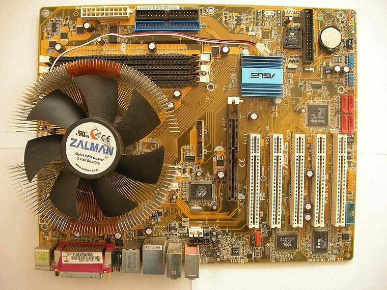

[ INDIVIDUAL COMPONENT // MOTHERBOARDS ]
ASUS K8N
K8N: Socket 754 / NVIDIA nForce3 250, 2004; revision-aware Socket motherboard specifications, CPU/BIOS qualification, board size, memory, expansion, storage and I/O.

IDENTIFICATION: ASUS model designation; identify PCB revision from the board itself. Confirm the exact silkscreen, revision and firmware on the physical board; near-name variants can use different BIOS files and connectors.
Specifications
| Catalog subcategory | AMD Socket platforms |
|---|---|
| Exact board / model | K8N — ASUS model designation; identify PCB revision from the board itself |
| Platform and chipset | Socket 754 / NVIDIA nForce3 250, 2004; NVIDIA nForce3 250 single-chip platform. |
| CPU and BIOS support | Socket 754; ASUS lists Athlon 64 and Sempron processor families. Verify individual CPU and minimum BIOS in the model support table. |
| Memory | Three 184-pin DDR DIMM sockets, up to 3 GB; memory speed and channel behavior depend on the installed Socket 754 CPU. |
| Board size / form factor | ATX, 305 × 244 mm. |
| Expansion and storage | One AGP 8X slot and five PCI slots. Two SATA 1.5 Gb/s ports and two PATA channels; onboard storage options are controller- and BIOS-specific. |
| Rear I/O and compatibility | Rear USB 2.0, PS/2, parallel and serial, RJ-45 Ethernet, analog audio and legacy keyboard/mouse connections. Discrete AGP graphics required. Socket 754 only; this is not the similarly named K8N-E Deluxe. Check the exact ASUS CPU/BIOS support listing before purchase, and use unbuffered DDR DIMMs within the board limit. |
Compatibility and revision notes
Socket 754 only; this is not the similarly named K8N-E Deluxe. Check the exact ASUS CPU/BIOS support listing before purchase, and use unbuffered DDR DIMMs within the board limit.
Before installation, compare the physical board and revision against the manufacturer manual. Check socket condition, CPU power requirements, cooler/chassis clearance, DIMM population order, power connectors and any shared PCIe or SATA lanes. Update firmware only with the exact model’s supported procedure.
Preservation and repair
Record the PCB revision, BIOS identifier, serial/date code, installed CPU and memory, accessories, known faults, repairs and test conditions. Use ESD-safe handling and inspect for socket damage, corrosion, leaking capacitors and loose conductive hardware before power-up.
Sources & further reading
- ASUS K8N manuals and supportManufacturer support index and official K8N documentation.
- ASUS K8N CPU support resourcesManufacturer processor compatibility resource; verify the required BIOS for the exact CPU.
Manufacturer documentation is authoritative for supported CPUs, minimum BIOS, memory qualification and revision-specific wiring. Do not transfer compatibility claims or firmware between similar model names.